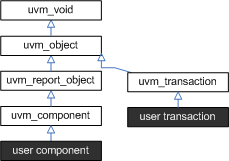

Core Base Classes
The UVM library defines a set of base classes and utilities that facilitate the design of modular, scalable, reusable verification environments.
The basic building blocks for all environments are components and the transactions they use to communicate. The UVM provides base classes for these, as shown below.

- uvm_object - All components and transactions derive from uvm_object, which defines an interface of core class-based operations: create, copy, compare, print, sprint, record, etc. It also defines interfaces for instance identification (name, type name, unique id, etc.) and random seeding.
- uvm_component - The uvm_component class is the root base class for all UVM components. Components are quasi-static objects that exist throughout simulation. This allows them to establish structural hierarchy much like modules and program blocks. Every component is uniquely addressable via a hierarchical path name, e.g. “env1.pci1.master3.driver”. The uvm_component also defines a phased test flow that components follow during the course of simulation. Each phase-- build, connect, run, etc.-- is defined by a callback that is executed in precise order. Finally, the uvm_component also defines configuration, reporting, transaction recording, and factory interfaces.
- uvm_transaction - The uvm_transaction is the root base class for UVM transactions, which, unlike uvm_components, are transient in nature. It extends uvm_object to include a timing and recording interface. Simple transactions can derive directly from uvm_transaction, while sequence-enabled transactions derive from uvm_sequence_item.
- uvm_root - The uvm_root class is special uvm_component that serves as the top-level component for all UVM components, provides phasing control for all UVM components, and other global services.
Summary
| Core Base Classes | |
| The UVM library defines a set of base classes and utilities that facilitate the design of modular, scalable, reusable verification environments. |